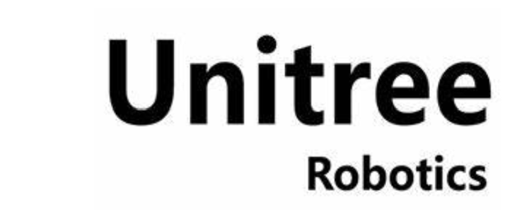
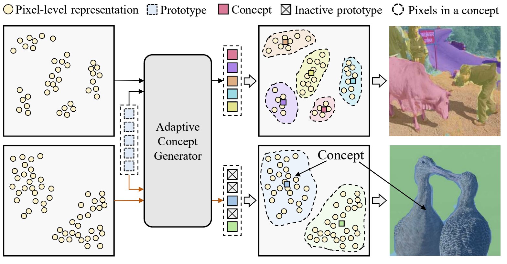
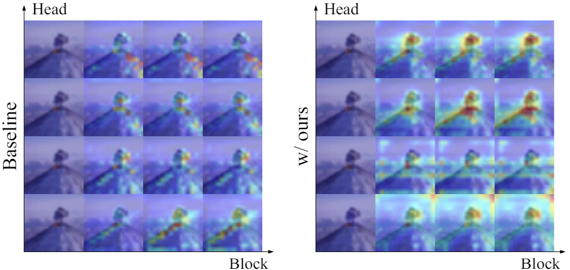

Xiangyue LiuPhD Candidate
Hong Kong University of Science and Technology
|
 |


Biography
I'm a second-year PhD candidate of ECE at The Hong Kong University of Science and Technology (HKUST), under the supervision of Prof. Ping Tan. I was a visiting student (RA) at Tsinghua University advised by Prof. Li Yi and Prof. Yang Gao. I obtained my M.S. in Software Engineering from Beihang University , and B.Eng in Software Engineering from Northeast Normal University. I am a member of AnySyn3D.
My research interests lie in Computer Vision and Robotics. I currently work on Embodied AI, 3D/4D reconstruction, generation, and editing. Early interests include visual SLAM and MVS.
Feel free to contact me by email if you are interested in discussing or collaborating with me.
News
- [11/2024] One paper was accepted by 3DV 2025 .
- [02/2024] One paper was accepted by CVPR 2024 .
- [09/2023] I start pursuing my Ph.D. degree at HKUST .
- [06/2022] Two paper were accepted by ECCV 2022 .
- [02/2022] One paper was accepted by CVPR 2022 .
- [06/2021] Graduated from Beihang University .
- [01/2021] One paper was accepted by ICRA 2021 .
Internship

|
Tencent AI Lab Sept. 2023 - Dec. 2024, Tencent AI Lab, Gemdale Viseen Tower, ShenZhen, China worked with Dr. Qi Zhang, Yuxin Wen Topic: Digital Avatar, Talking Head |
|  |
Unitree Apr. 2024 - Aug. 2024, Unitree, R&D departments, Hangzhou, China closely worked with Yinhuai Wang Topic: Real World Humanoid-Object Interaction |
|
|
Microsoft Research Asia Apr. 2023 - Mar. 2024, Beijing, China Topic: Talking Head Generation |
Education

|
The Hong Kong University of Science and Technology, Hong Kong PhD Student in Visual Intelligence Lab, HKUST Advisor: Prof. Qifeng Chen Sep. 2024 - Future |
|
Peking University, China Master of Science in Computer Science Advisor: Prof. Jie Chen Sep. 2021 - Jun. 2024 |
|
|
Beijing Normal Univesity, China Bachelor of Management in Information Systems Sep. 2017 - Jun. 2021
|
Selected Publications
| /*Preprints*/ | |

|
SkillMimic: Learning Reusable Basketball Skills from Demonstrations Yinhuai Wang*, Qihan Zhao*, Runyi Yu*, Ailing Zeng, Jing Lin, Zhengyi Luo, Hok Wai Tsui, Jiwen Yu, Xiu Li, Qifeng Chen, Jian Zhang, Lei Zhang, Ping Tan [paper] [project page] [code] |

|
Make Your Actor Talk: Generalizable and High-Fidelity Lip Sync with Motion and Appearance Disentanglement Runyi Yu, Tianyu He, Ailing Zhang, Yuchi Wang, Junliang Guo, Xu Tan, Chang Liu, Jie Chen, Jiang Bian [paper] [project page] |
| /*Conference*/ | |

|
InstructAvatar: Text-Guided Emotion and Motion Control for Avatar Generation ECCV 2024Yuchi Wang, Junliang Guo, Jianhong Bai, Runyi Yu, Tianyu He, Xu Tan, Xu Sun, Jiang Bian [paper] [project page] |

|
GAIA: Data-driven Zero-shot Talking Avatar Generation Tianyu He*, Junliang Guo*, Runyi Yu*, Yuchi Wang*, Jialiang Zhu, Kaikai An, Leyi Li, Xu Tan, Chunyu Wang, Han Hu, HsiangTao Wu, Sheng Zhao, Jiang Bian ICLR 2024[paper] [project page] |

|
LaPE: Layer-adaptive Position Embedding for Vision Transformers with Independent Layer Normalization Runyi Yu*, Zhennan Wang*, Yinhuai Wang*, Kehan Li, Chang Liu, Haoyi Duan, Xiangyang Ji, Jie Chen ICCV 2023 |
|  |
ACSeg: Adaptive Conceptualization for Unsupervised Semantic Segmentation Kehan Li, Zhennan Wang, Zesen Cheng, Runyi Yu, Yian Zhao, Guoli Song, Chang Liu, Li Yuan, Jie Chen CVPR 2023 Hightlight[paper] [project page] |

|
Unlimited-Size Diffusion Restoration Yinhuai Wang, Jiwen Yu, Runyi Yu, Jian Zhang CVPR Workshop 2023 Oral |
|  |
Locality guidance for improving vision transformers on tiny datasets Kehan Li*, Runyi Yu*, Zhennan Wang, Li Yuan, Guoli Song, Jie Chen ECCV 2022 |
Community Services
-
Student Reviewers:
The 34rd International Joint Conference on Artificial Intelligence (IJCAI 2025)
The 33rd International Joint Conference on Artificial Intelligence (IJCAI 2024)
IEEE Transactions on Multimedia (TMM)